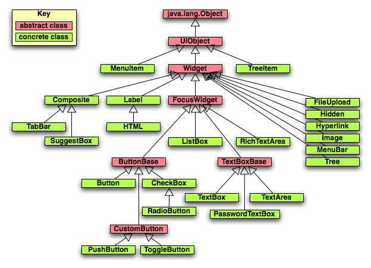
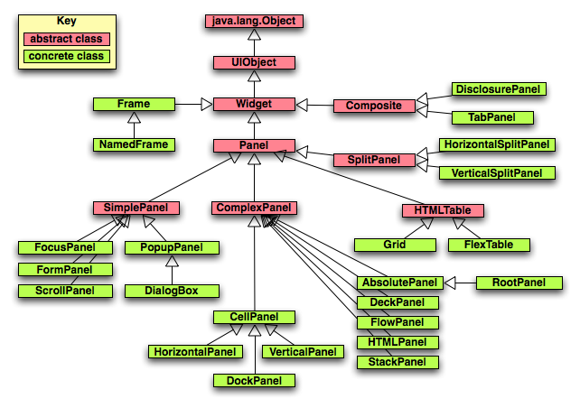
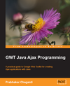
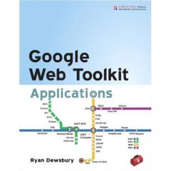
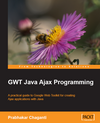
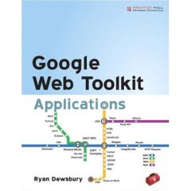

Google Web Toolkit (GWT)
Feedback and corrections are welcomed!
Email mark at ociweb dot com.
Contents
Introduction
Who is using it?
Installing
Creating a New Project
Implementing a New Project
Internationalization
Running
Testing
Deploying and Using Ant
Formatting With CSS
Widgets
Containers
Listeners/Adapters
Server Calls
Error Handling
JavaScript from Java
Client-side XML Processing
Custom Widgets
Creating Reusable Modules
Resources
Introduction
GWT is a Java-based framework for creating Ajax web applications that
makes writing web applications similar to writing Swing applications.
Documentation can be found at the
main web site, in the
developer guide, and in the
class documentation.
The main benefits of using GWT over other web app. frameworks are:
- no need to write HTML which means no scriptlets
- no need to populate HTML forms with Java data
- no messy navigation control with redirects and forwards
- no need to write JavaScript
- can use CSS for formatting and some layout
- can create browser-based GUIs using Swing-like widgets
- can make asynchronous server calls which results in a
better user experience
- Ajax features can be implemented
without thinking about DOM manipulation
- DOM manipulation, if needed, is easy to do
- can easily pass Java objects between the client and server
- can throw Java exceptions
from the server back to the client
- maintained and enhanced by Google
which is recognized for their software expertise
and is one of the few serious Microsoft competitors
Client-side code is primarily written using a subset of Java.
The subset includes selected classes from
the java.lang and java.util packages.
For example, reflection methods are not supported.
To get the type of an object as a String, use
GWT.getTypeName(object).
Java 5 features such as generics and enums can be used in GWT 2.0.
For details on the supported subset, see
here.
The client-side code is "compiled" into HTML and JavaScript.
A downside of this is that third party Java libraries cannot be used
from client-side Java code unless their source code is available
to the GWT compiler and only uses the supported subset of Java.
An upside of this is that it dramatically reduces the need
to learn HTML and JavaScript, although if needed,
JavaScript code can be wrapped in Java methods.
This allows JavaScript libraries such as
script.aculo.us
to be used.
The use of CSS for formatting
(fonts, colors, sizes, ../) is still encouraged.
Internationalization of text is supported through two mechanisms.
The first uses custom interfaces that extend the
Messages
interface to insert property file values into generated JavaScript.
The second uses the GWT
Dictionary
class to obtain text values from JavaScript maps embedded in HTML.
Server-side code can be written using
practically any programming language.
When written in Java, it is typical to implement
server-side functionality using servlets.
All features of Java can be used on the server-side,
including Java 5 features.
This means that common Java server-side technologies such as
EJBs, Hibernate, JDBC and Spring can be used.
A benefit of the GWT approach is that web applications are easier
to maintain. This is due to the notion that maintaining Java code is
easier than maintaining a mixture of Java, HTML and JavaScript code.
IDE integration simplifies debugging.
It can also provides some code generation
that greatly simplifies creating GWT RPC services.
For information about IDEA integration, see the
GWT Studio plugin.
For information about Eclispe integration,
see the Googlipse plugin.
Another Eclipse plugin for GWT is GWT Designer.
This is a commercial tool that offers visual GUI creation
and two-way synchronization between the GUI design tool and the code.
Prices start at $39 per year.
Who's Using It?
Here's a list of some of the web sites that are using GWT.
Installing top
Here are the steps to install GWT.
-
Verify that a Java SDK (1.4 or higher) is installed.
This can be done by running
java -version
from a shell/command prompt.
-
Browse to the
GWT web site.
- Click the "Download Google Web Toolkit (GWT)" link.
-
Download a platform-specific archive/zip file
for a selected version.
- Unpackage the archive/zip file to a selected directory.
-
Set the environment variable
GWT_HOME
to the path to the unpackaged GWT directory.
If you'd like to build the very latest version of GWT
from the source code in the trunk of the Subversion repository,
follow the steps here.
After the Ant build completes, there will be a
trunk/build/staging/gwt-{platform}-0.0.0 directory.
That will contain all the JAR and native libraries files needed by GWT.
Set the GWT_HOME environment variable to point to this directory.
Creating a new project top
Here are the steps to create a new GWT project.
- Create a directory for the application.
- From a shell or command prompt, navigate to that directory.
-
Use the applicationCreator script to create the project
directory structure and populate it with initial project files.
Under Windows, run
%GWT_HOME%\applicationcreator {package}.client.{app-name}
Under UNIX/Linux/Mac OS X, run
$GWT_HOME/applicationcreator {package}.client.{app-name}
Implementing a new project top
The initial files to be edited for a new project are
the main HTML file and the main Java file.
The main HTML file is
src/{package-dirs}/public/{app-name}.html.
The main Java file is
src/{package-dirs}/client/{app-name}.java.
Here's an example of a minimal HTML file.
<html>
<head>
<title>{title}</title>
<meta name="gwt:module" content="{package}.{app-name}">
</head>
<body>
<script language="javascript" src="gwt.js"></script>
<!-- OPTIONAL: include this if history support is desired -->
<iframe id="__gwt_historyFrame" style="width:0;height:0;border:0"></iframe>
</body>
</html>
Here's an example of a minimal Java file.
Note how the imports below differ from those
in the generated source file.
package com.ociweb.demo.client;
import com.google.gwt.core.client.EntryPoint;
import com.google.gwt.user.client.ui.*;
public class {app-name} implements EntryPoint {
public void onModuleLoad() {
final TextBox textBox = new TextBox();
textBox.setText("text box");
final Button button = new Button("Click me");
button.addClickListener(new ClickListener() {
public void onClick(Widget sender) {
textBox.setText("clicked");
}
});
Panel panel = new FlowPanel();
panel.add(textBox);
panel.add(button);
RootPanel.get().add(panel);
}
}
A GWT application is referred to as a "module".
The module is defined in the XML file
src/{package-dirs}/{app-name}.gwt.xml.
For most applications, this file doesn't require modification.
Internationalization top
Here are the steps to internationalize strings for the default locale
in the client side of a GWT project.
- Create a property file, perhaps named
MyConstants.properties or
MyMessages.properties,
that will hold the strings for the default locale.
Constants are just static strings.
For example,
homeTeamWon=The home team won.
Messages allow values to be inserted using numbered parameters
starting from zero.
For example,
homeTeamWon=The home team won by a score of {0} to {1}.
- Add properties to this file whose values
will be displayed in the GUI.
- Create an interface named
MyConstants
or MyMessages.
- Make the interface extend
com.google.gwt.i18n.client.Constants or
com.google.gwt.i18n.client.Messages or
.
- For each property in the property file,
add a method to the interface that has the same name,
takes the correct number of arguments
(zero for constants, possibly greater than zero for messages),
and a return type of
String.
- Add the following line to the module XML.
<inherits name="com.google.gwt.i18n.I18N"/>
- Add one of the following lines of code to entry point Java class.
MyConstants constants = (MyConstants) GWT.create(MyConstants.class);
MyMessages messages = (MyMessages) GWT.create(MyMessages.class);
- To get all text displayed in the GUI,
use one of the following lines.
String constant = constants.{property-name}();
String message = messages.{property-name}({parameter-list});
Here are the steps to add support for locales other than the default.
- Add the following line to the module XML.
<extend-property name="locale" values="{comma-separated-language-codes}"/>
For example, to add support for French and Spanish,
set the values attribute to "fr,es".
- Create a new property file for each additional language named
MyConstants_{language-code}.properities or
MyMessages_{language-code}.properities
in the same directory as the previous property file.
Each file should define the same property names
and values set to the appropriate language-specific translation.
To display the GUI in another language, add
"?locale={language-code}"
to the end of the web app. URL in the browser.
Here are suggested steps to internationalize strings in a GWT service.
- Add a
locale property to each property file.
In the file for the default locale, add the following line.
locale=
In the files for other locales, add the following line.
locale={language-code}
This is a trick recommended by Adam Tacy
to allow client-side code to determine the current locale.
It works because only the property file associated with the
current locale gets loaded by the GWT.create method.
-
Add a
locale method
to the MyConstants interface
that has no arguments and has a return type of String.
- Add a
setLocale method to each remote service
that requires the locale.
- In the client-side code, obtain the locale
with the following line.
String locale = constants.locale();
- In the client-side code, pass the locale to the
setLocale method of each remote service
that requires it.
- In each service that requires internationalization,
- Add an import for the
PropertyUtil class
(shown below).
- Add the following field.
private PropertyUtil propertyUtil;
- Set the
propertyUtil field
in the no-arg constructor of the service class
with the following code.
try {
propertyUtil = new PropertyUtil("{package}/client/MyConstants");
} catch (java.io.IOException e) {
throw new RuntimeException(e);
}
- Obtain internationalized
String values with code like the following.
String value = propertyUtil.getProperty("{name}");
Here is the code for the PropertyUtil class
which is only needed for server-side internationalization.
It maintains a Hash of ResourceBundles
so that it can provide translations for multiple languages.
package com.ociweb.util;
import java.io.IOException;
import java.util.Locale;
import java.util.*;
public class PropertyUtil {
private Map<String, ResourceBundle> bundles =
new HashMap<String, ResourceBundle>();
private String propertyFileName;
public PropertyUtil(String propertyFileName) throws IOException {
this.propertyFileName = propertyFileName;
}
private ResourceBundle getBundle(String locale) {
ResourceBundle bundle = bundles.get(locale);
if (bundle == null) {
bundle = ResourceBundle.getBundle(
propertyFileName, new Locale(locale));
bundles.put(locale, bundle);
}
return bundle;
}
public String getProperty(String name) {
String locale = System.getProperty("locale");
return getBundle(locale).getString(name);
}
}
Running top
The easiest way to run a GWT application is to run it
in "hosted mode". In this mode, a special browser is used to
display and exercise the user interface.
To run the application in hosted mode, perform the following steps.
-
From a shell or command prompt,
navigate to the application directory.
-
Run the
{app-name}-shell script.
This compiles the client-side code,
starts the hosted mode browser,
and runs the application inside it.
Once the hosted mode browser is running,
changes to client-side Java code (made in any editor)
can be tested by simply
clicking the refresh button in the browser.
No separate compiling or deploying is required!
This allows quick testing of CSS and widget layout changes.
However, changes to server code still require
recompiling and redeploying.
Testing top
Unit testing is supported through integration with JUnit.
An example on the GWT website is here.
This demonstrates using the JUnit 3 API.
The JUnit 4 API is not supported yet.
GWT provides a script to generate unit test source files
and scripts to run the tests. Here's an example of using it.
$GWT_HOME/junitCreator -junit $JAVA_DIR/JUnit/junit3.8.2/junit.jar \
-module com.ociweb.gwt.Hello -out tests com.ociweb.gwt.client.HelloTest
Here are the steps to implement a JUnit test for a GWT application.
- Add the JUnit 3
junit.jar file to the classpath.
- Add the following line to the
*.gwt.xml
module XML file.
<inherits name="com.google.gwt.junit.JUnit"/>
- Create a class that extends
com.google.gwt.junit.client.GWTTestCase.
- Implement the
getModuleName method that returns
the fully-qualified name of the module being tested as a String.
- Implement test methods that perform asserts.
Some of the things that test methods can do include the following.
- create widgets
- set the state of widgets
(for example, the text in a
TextBox
or the state of a CheckBox)
- invoke RPC service methods
- simulate events
(such as button clicks or focus leaving a widget)
- test the state of widgets (perhaps to verify that certain events
change widget states in expected ways)
As an example, suppose we have a GWT application
with the following functionality.
nameTextBox is a TextBox
where the user should enter their name.clearButton is a Button the user
presses to clear their name from nameTextBox.greetButton is a Button
the user presses to get a personalized greeting.
This is done by invoking an RPC service method that returns
the greeting as a String which is then used
to change the text displayed in greetLabel.
All of this is implemented in the class
com.ociweb.gwt.Hello.
This class has package-level fields for each widget
that needs to be accessed from the test code.
A test for this functionality could look like the following.
package com.ociweb.gwt.client;
import com.google.gwt.junit.client.GWTTestCase;
import com.google.gwt.user.client.Timer;
/**
* Note: If a GWT hosted mode browser is already running,
* even for a different GWT application, this test will fail with
* java.lang.IllegalStateException: Embedded Tomcat is already running.
*/
public class GreeterTest extends GWTTestCase {
private static final String NAME = "John Doe";
// Entry point class of the GWT application being tested.
private Hello hello;
public String getModuleName() { return "com.ociweb.gwt.Hello"; }
// GWTTestCase has it's own setUp method
// that initializes the GWT infrastucture.
// You cannot do anything in your own setUp method that involves GWT widgets.
private void widgetSetup() {
// Build the web GUI.
hello = new Hello();
hello.onModuleLoad();
}
public void testClear() {
widgetSetup();
hello.nameTextBox.setText(NAME);
assertEquals(NAME, hello.nameTextBox.getText());
hello.clearButton.click();
assertEquals("", hello.nameTextBox.getText());
}
public void testGreet() {
widgetSetup();
hello.nameTextBox.setText(NAME);
hello.greetButton.click(); // simulate button click
// The "Greet" button has a ClickListener that
// invokes an RPC service method and registers an AsyncListener.
// When the service method returns its result to the AsyncListener,
// the AsyncListener will update the text in greetLabel.
// Wait long enough (200 milliseconds) for that to happen
// before testing the text in greetLabel.
Timer timer = new Timer() {
public void run() {
String text = hello.greetLabel.getText();
assertEquals("Hello " + NAME + "!", text);
finishTest();
}
};
timer.schedule(200);
// Since this test involves asynchronous code
// (the RPC service method call), notify the GWTTestCase framework
// that it needs to give this method some time before it
// considers this test method to be finished.
// Asserts must be run and finishTest() must be called
// before the time expires or this test method will fail.
// The Timer run method above will have 100 milliseconds (300 - 200)
// to do that.
delayTestFinish(300);
}
}
To run the tests, use a standard JUnit test runner.
See the "test" target in the Ant build file below.
Deploying and Using Ant top
To deploy a GWT application to an app. server
so it can be run outside hosted mode,
perform the following actions,
all of which can be automated with Ant.
-
Compile the server-side Java code you've written
using a standard Java compiler.
-
Compile the client-side Java code you've written
into HTML and JavaScript using the GWTCompiler.
This can be done from Ant or from a shell/command prompt.
To compile from a shell/command prompt,
navigate to the application directory and
run the {app-name}-compile script
By default, the JavaScript code is generated in "obfuscate" mode
which results in smaller files.
Another supported mode is "pretty"
which makes the files readable, but larger.
The last mode is "detailed" which is like "pretty",
but adds more verbose names to assist with tracing
JavaScript functions back to methods in specific Java classes.
To specify the mode that the GWT compiler should use,
run the compile script with the
-style=OBF|PRETTY|DETAILED option.
The compiler generates a separate JavaScript file for each
supported browser. The correct JavaScript file is automatically
downloaded to the requesting browser by the "bootstrap script".
This reduces the amount of JavaScript code
that must be downloaded
since only code applicable to that browser is downloaded.
-
Bundle all the bytecode, generated HTML/JavaScript, and CSS,
along with the supplied gwt-servlet.jar
in a WAR file.
-
Deploy the WAR file to a J2EE server such as Tomcat or JBoss.
Once the application is deployed, it can be run from a web browser
by visiting
http://{server}:{port}/{package}/{app-name}.html.
To shorten the URL, see here.
Here's an example of an Ant build.properties file
that is used by build.xml. For many applications,
only the values of module and
package need to be changed.
gwt.dir={path-to-gwt}
junit.dir={path-to-junit3}
junit.jar=${junit.dir}/junit.jar
tomcat.dir={path-to-tomcat}
servlet-api.jar=${tomcat.dir}/common/lib/servlet-api.jar
module={module}
package={package}
test=*
url=http://localhost:8080/${ant.project.name}/${package}.${module}/${module}.html
war=${ant.project.name}.war
Here's an example of an Ant build.xml file
that builds and deploys a GWT application.
For many applications, only the name attribute
of the root element project needs to be changed.
It expects to find a web.xml file
in the same directory.
That is described here.
If no RPC services (more on these later) are needed,
the servlet and servlet-mapping
tags can be omitted.
Since the default target is deploy,
it can be run by simply running the command ant.
It will output a URL that can be copied and pasted into
a web browser to run the web app.
<?xml version="1.0" encoding="UTF-8"?>
<project name="{module}" default="deploy" basedir=".">
<property environment="env"/>
<property file="build.properties"/>
<path id="classpath">
<pathelement location="build"/>
<pathelement location="src"/>
<pathelement location="${gwt.dir}/gwt-user.jar"/>
<!-- next line is platform-specific -->
<pathelement location="${gwt.dir}/gwt-dev-mac.jar"/>
<pathelement location="${gwt.dir}/gwt-servlet.jar"/>
<pathelement location="${junit.jar}"/>
<pathelement location="${servlet-api.jar}"/>
</path>
<target name="clean" depends="clean.test"
description="deletes all generated files">
<delete dir=".gwt-cache"/> <!-- generated by GWT -->
<delete dir="build"/> <!-- generated by the prepare target -->
<delete dir="tomcat"/> <!-- generated by GWT -->
</target>
<target name="clean.test" description="deletes all generated test files">
<delete dir="test"/>
</target>
<target name="compile" depends="prepare"
description="compiles Java source files to bytecode">
<javac srcdir="src" destdir="build"
classpathref="classpath" debug="true">
</javac>
</target>
<target name="compile.gwt" depends="compile"
description="compiles Java source files to JavaScript">
<!-- Consider adding -Xms256m -Xmx512m to improve performance. -->
<java classname="com.google.gwt.dev.GWTCompiler"
classpathref="classpath" fork="true">
<arg line="-out build/www"/>
<arg line="-style OBFUSCATE"/>
<arg value="${package}.${module}"/>
</java>
</target>
<target name="deploy" depends="war,undeploy"
description="deploys the war file to Tomcat">
<copy file="build/${war}" todir="${tomcat.dir}/webapps"/>
<echo>browse ${url}</echo>
</target>
<target name="hosted" depends="compile"
description="runs the application in hosted mode">
<java classname="com.google.gwt.dev.GWTShell"
classpathref="classpath" fork="true">
<!-- next line is only for Mac OS X -->
<jvmarg value="-XstartOnFirstThread"/>
<arg line="-out ./www"/>
<arg line="${package}.${module}/${module}.html"/>
</java>
</target>
<target name="prepare" description="creates output directories">
<mkdir dir="build"/>
</target>
<target name="test" depends="clean.test,compile"
description="runs all JUnit tests">
<mkdir dir="test"/>
<junit fork="yes" printsummary="yes">
<!-- next line is only for Mac OS X -->
<jvmarg value="-XstartOnFirstThread"/>
<classpath refid="classpath"/>
<batchtest todir="test">
<fileset dir="src" includes="**/${test}Test.java"/>
</batchtest>
<formatter type="xml"/>
</junit>
<junitreport toDir="test">
<fileset dir="test"/>
<report format="frames" todir="test"/>
</junitreport>
<exec os="Windows" executable="cmd.exe">
<arg line="/c start test/index.html"/>
</exec>
<exec os="Mac OS X" executable="open">
<arg line="-a /Applications/Safari.app test/index.html"/>
</exec>
</target>
<target name="undeploy" description="undeploys the web app. from Tomcat">
<delete dir="${tomcat.dir}/webapps/${ant.project.name}"/>
<delete file="${tomcat.dir}/webapps/${war}"/>
</target>
<target name="war" depends="compile, compile.gwt"
description="builds the war file">
<delete file="build/${war}"/>
<war warfile="build/${war}" webxml="web.xml">
<!-- bytecode from your Java code -->
<classes dir="build" includes="**/*.class"/>
<!-- generated HTML/JavaScript plus your CSS -->
<fileset dir="build/www"/>
<!-- supplied JAR -->
<lib file="${gwt.dir}/gwt-servlet.jar"/>
</war>
</target>
</project>
Formatting With CSS top
GWT encourages formatting with CSS.
All widgets support the methods
addStyleName
(adds to existing list of styles for the widget) and
setStyleName
(replaces existing list of styles for the widget).
To specify formatting for each style name,
add a CSS stylesheet file (.css) to the
src/{package-dirs}/public directory
and add the following line to the module XML in
src/{package-dirs}/{app-name}.gwt.xml.
<stylesheet src="{name}.css"/>
A good source of information about CSS formatting with GWT is
here.
Also, see KitchenSink.css in the KitchenSink sample application
included with GWT.
The mouse cursor can be changed through CSS.
Many cursor shapes are supported.
Commonly used cursors include "default" (normal arrow),
"pointer" (hand with a pointing finger),
and "wait" (hourglass).
The "pointer" cursor is typically used the mouse is over a widget
that the use is allowed to select.
The "wait" cursor is typically used when a server call has been made
and the GUI will be updated when the call completes.
Widgets top
GWT currently provides the following user interface widgets.
Additional, non-Google-supplied widgets are also available.
Concrete classes have a green background.
Abstract classes have a red background.

| Widget Name |
Description |
Superclass |
Default CSS Classes |
Listeners |
| Button |
push-button |
ButtonBase |
gwt-Button |
none |
| ButtonBase |
superclass of Button and CheckBox |
FocusWidget |
none |
none |
| CheckBox |
check box |
ButtonBase |
gwt-CheckBox |
none |
| Composite |
widget that wraps other widgets contained in a Panel; useful for creating new widgets |
Widget |
none |
none |
| FileUpload |
wraps an HTML <input type="file"> |
Widget |
none |
none |
| FocusWidget |
superclass of ButtonBase, ListBox and TextBoxBase |
Widget |
none |
ClickListener,
FocusListener,
KeyboardListener
|
| Hidden |
represents a hidden field in an HTML form |
Widget |
none |
none |
| HTML |
contains arbitrary HTML |
Label |
gwt-HTML |
none |
| Hyperlink |
internal hyperlink |
Widget |
gwt-Hyperlink |
ClickListener |
| Image |
displays an image at a given URL |
Widget |
gwt-Image |
ClickListener,
LoadListener,
MouseListener
|
| Label |
displays non-HTML text |
Widget |
gwt-Label |
ClickListener,
MouseListener
|
| ListBox |
presents a list of choices as a list box or drop-down list |
FocusWidget |
gwt-ListBox |
ChangeListener |
| MenuBar |
menu bar that holds other MenuBar objects and MenuItem objects |
Widget |
gwt-MenuBar |
none |
| MenuItem |
item placed in a MenuBar; when clicked,
fires a
Command or opens a submenu |
UIObject |
gwt-MenuItem |
none |
| PasswordTextBox |
single-line text box that masks input |
TextBoxBase |
gwt-PasswordTextBox |
none |
| RadioButton |
mutually-exclusive selection radio button |
CheckBox |
gwt-RadioButton |
none |
| TabBar |
horizontal bar of folder-style tabs often used by TabPanel |
Composite |
gwt-TabBar
gwt-TabBarFirst
gwt-TabBarRest
gwt-TabBarItem
gwt-TabBarItem-selected
|
TabListener |
| TextArea |
multi-line text box |
TextBoxBase |
gwt-TextArea |
none |
| TextBox |
single-line text box |
TextBoxBase |
gwt-TextBox |
none |
| TextBoxBase |
superclass of PasswordTextBox, TextArea and TextBox |
FocusWidget |
none |
ChangeListener,
ClickListener,
KeyboardListener
|
| Tree |
hierachical tree of TreeItems |
Widget |
gwt-Tree |
FocusListener,
KeyboardListener,
MouseListener,
TreeListener
|
| TreeItem |
item in a Tree |
UIObject |
gwt-TreeItem,
gwt-TreeItem-selected
|
none;
use TreeListener
on containing Tree |
| UIObject |
superclass of MenuItem, TreeItem, Widget |
java.lang.Object |
none |
none |
| Widget |
superclass of Composite, FileUpload, FocusWidget, Frame, Hidden,
Hyperlink, Image, Label, MenuBar, Panel, and Tree |
UIObject |
none |
none |
Containers top
GWT currently provides the following containers
for laying out widgets.
Additional, non-Google-supplied containers are also available.

| Container Name |
Description |
Superclass |
Default CSS Classes |
| AbsolutePanel |
positions child widgets absolutely, allowing overlap |
ComplexPanel |
none |
| CellPanel |
child widgets are placed in table cells |
ComplexPanel |
none |
| ComplexPanel |
abstract bse class for panels that contain multiple child widgets |
Panel |
none |
| DeckPanel |
displays child widgets in a deck where only one at a time is visible |
ComplexPanel |
none |
| DialogBox |
a separate window that has a caption area and can be dragged |
PopupPanel |
gwt-DialogBox
Caption
|
| DockPanel |
child widgets are docked at outer edges or in the remaining center area |
CellPanel |
none |
| FlexTable |
flexible table that creates cells on demand |
HTMLTable |
none |
| FlowPanel |
child widgets using default HTML layout which means that
each line contains as many widgets as will fit |
ComplexPanel |
none |
| FocusPanel |
makes content focusable and allows catching mouse and keyboard events (useful for drag-n-drop) |
SimplePanel |
none |
| FormPanel |
wraps content in an HTML <form> element |
SimplePanel |
none |
| Frame |
creates an <iframe> that contains an given website |
Widget |
gwt-Frame (implemented?) |
| Grid |
grid containing text, HTML or widgets;
number of rows/columns must be specified;
simpler alternative to FlexTable
|
HTMLTable |
none |
| HorizontalPanel |
lays out child widgets in a single row |
CellPanel |
none |
| HTMLPanel |
contains HTML that can attach child widgets to specific elements insside the HTML |
ComplexPanel |
none |
| HTMLTable |
superclass of FlexTable and Grid;
supports TableListener |
Panel |
none |
| NamedFrame |
a Frame that has a name |
Frame |
none |
| Panel |
abstract superclass of all panels which are widgets that contain others |
Widget |
none |
| PopupPanel |
a panel that can popup over other widgets; supports
PopupListener |
SimplePanel |
none |
| RootPanel |
the panel to which all others must ultimately be added |
AbsolutePanel |
|
| ScrollPanel |
a panel whose content is scrollable |
SimplePanel |
none |
| SimplePanel |
abstract superclass for all panels that contain only one widget;
call setWidget to specify it |
Panel |
none |
| StackPanel |
panel that stacks child widgets vertically and displays only
one at a time, with a header for each child that the user clicks
to display the associated widget |
ComplexPanel |
gwt-StackPanel
gwt-StackPanelItem
gwt-StackPanelItem-selected
|
| TabPanel |
a panel that represents a tabbed set of pages, each containing another widget |
Composite |
gwt-TabBar
gwt-TabPanel
gwt-TabPanelBottom
|
| VerticalPanel |
lays out child widgets in a single column |
CellPanel |
none |
Listeners/Adapters top
Listener interfaces define methods that are invoked on
objects that implement them when certain events occur.
Adapter classes make it easier to implement listener interfaces
by providing method implementations that do nothing,
saving you the trouble of writing them.
| Name |
Superinterface |
Adapter |
Methods |
|
ChangeListener
|
EventListener |
none |
void onChange(Widget sender) |
|
ClickListener
|
EventListener |
none |
void onClick(Widget sender) |
|
EventListener
|
none |
none |
none; a marker interface |
|
FocusListener
|
EventListener |
FocusListenerAdapter
|
void onFocus(Widget sender)
void onLostFocus(Widget sender)
|
|
KeyboardListener
|
EventListener |
KeyboardListenerAdapter
|
void onKeyDown(Widget sender, char keyCode, int modifiers)
void onKeyPress(Widget sender, char keyCode, int modifiers)
void onKeyUp(Widget sender, char keyCode, int modifiers)
|
|
LoadListener
|
none |
none |
void onError(Widget sender)
void onLoad(Widget sender)
|
|
MouseListener
|
EventListener |
MouseListenerAdapter
|
void onMouseDown(Widget sender, int x, int y)
void onMouseEnter(Widget sender)
void onMouseLeave(Widget sender)
void onMouseMove(Widget sender, int x, int y)
void onMouseUp(Widget sender, int x, inty)
|
|
PopupListener
|
EventListener |
none |
void onPopupClosed(PopupPanel sender, boolean autoClosed) |
|
ScrollListener
|
EventListener |
none |
void onScroll(Widget sender, int scrollLeft, int scrollTop)
|
|
TableListener
|
none |
none |
void onCellClicked(SourcedTableEvents sender, int row, int cell)
|
|
TabListener
|
EventListener |
none |
void onBeforeTabSelected(SourcesTabEvents sender, int tabIndex)
void onTabSelected(SourcesTabEvents sender, int tabIndex)
|
|
TreeListener
|
EventListener |
none |
void onTreeItemSelected(TreeItem item)
void onTreeItemStateChanged(TreeItem item)
|
Server Calls top
GWT supports four methods for client-side code to invoke server-side
functionality. These options are described below. Regardless of the
option selected, it's important to let the user know when background
processing that may update the GUI is taking place. Typical ways to
do this include displaying an animated GIF image in a standard
screen location, changing the cursor to an hourglass (wait), or both.
HTML forms
This option is not described further here.
XMLHttpRequest
This option is not described further here.
JavaScript Object Notation (JSON)
This is a form of object serialization that is useful when working
with non-Java services.
By default, only a limited number of object types can be passed
using this mechanism.
They include arrays, maps, numbers, strings and booleans.
Note that JSON does not support circular references between objects.
For more information, see the class reference
and the
JSON example project.
GWT RPC
This approach utilizes Java servlets that extend the GWT
RemoteServiceServlet class.
An alternative approach based on Spring is described
here.
Any Java object that implements the GWT
IsSerializable
interface AND has a no-arg constructor can be passed using this method.
This is just a marker interface.
No additional methods need to be implemented.
Many of the GWT versions of standard Java classes,
such as the java.util
Map and List classes, do this.
The steps to implement a service are:
-
Create a service interface that extends
com.google.gwt.user.client.rpc.RemoteService
under src/{package-dirs}/client.
For example,package {package}.client;
import com.google.gwt.user.client.rpc.RemoteService;
public interface MyService extends RemoteService {
public MyType3 doSomething(MyType1 p1, MyType2 p2);
}
-
Create an asynchronous service interface that extends nothing
under
src/{package-dirs}/client.
The methods in this interface should return void
and have the same arguments as the service interface
with an additional last argument of the type
com.google.gwt.user.client.rpc.AsyncCallback.
For example,package {package}.client;
import com.google.gwt.user.client.rpc.AsyncCallback;
public interface MyServiceAsync {
public void doSomething(MyType1 p1, MyType2 p2, AsyncCallback callback);
}
-
Create a
server directory
under src/{package-dirs}
if it doesn't already exist.
-
Create a service implementation servlet that extends
com.google.gwt.server.rpc.RemoteServiceServlet
and implements the service interface
under src/{package-dirs}/server.
For example,package {package}.server;
import com.google.gwt.user.server.rpc.RemoteServiceServlet;
import {package}.client.MyService;
public class MyServlet
extends RemoteServiceServlet implements MyService {
// This is required because HttpServlet implements Serializable.
private static final long serialVersionUID = 1L;
public MyServlet() {
// Put any needed initialization code here.
}
public MyType3 doSomething(MyType1 p1, MyType2 p2) {
// implement service method here
}
}
-
Add a servlet mapping to the module XML file
in src/{package-dirs}/{app-name}.gwt.xml.
For example,
<servlet path="/MyServlet" class="{package}.server.MyServlet"/>
-
Create a
web.xml web deployment descriptor file
at the top of the project directory
and add content like the following.
<?xml version="1.0" encoding="UTF-8"?>
<web-app version="2.4"
xmlns="http://java.sun.com/xml/ns/j2ee"
xmlns:xsi="http://www.w3.org/2001/XMLSchema-instance"
xsi:schemaLocation="http://java.sun.com/xml/ns/j2ee
http://java.sun.com/xml/ns/j2ee/web-app_2_4.xsd">
<servlet>
<servlet-name>MyServlet</servlet-name>
<servlet-class>{package}.server.MyServlet</servlet-class>
</servlet>
<servlet-mapping>
<servlet-name>MyServlet</servlet-name>
<url-pattern>/{package}.{module}/MyServlet</url-pattern>
</servlet-mapping>
</web-app>
As described above in the Deploying
section above, the servlet can be compiled and deployed using Ant.
The steps to invoke a GWT RPC service from a client are:
-
Get an instance of the service,
cast it to the asychronous interface type,
and configure it as a ServiceDefTarget.
For example,
import com.google.gwt.core.client.GWT;
import com.google.gwt.user.client.rpc.AsyncCallback;
import com.google.gwt.user.client.rpc.ServiceDefTarget;
../
MyServiceAsync myService = (MyServiceAsync) GWT.create(MyService.class);
String myURL = GWT.getModuleBaseURL() + "/MyServlet";
((ServiceDefTarget myService).setServiceEntryPoint(myURL);
-
Create an object from a class that implements
com.google.gwt.user.client.rpc.AsyncCallback.
Often this is done using an anonymous inner class.
AsyncCallback requires two methods,
onFailure and onSuccess.
For example,AsyncCallback callback = new AsyncCallback() {
public void onFailure(Throwable e) {
// Put code to handle failures here.
}
public void onSuccess(Object result) {
// Put code to handle success here.
// To use the result, cast it to the type of object it is.
}
};
-
Invoke service methods by passing a callback object
to methods in the asynchronous interface.
For example,
myService.doSomething(p1, p2, callback);
It is not allowed to pass null for the callback object
even if there is nothing that needs to be done on the client-side
after the service call completes.
For more information on remote procedure calls, see
here.
Error Handling top
If an exception is not caught when running in hosted mode,
a stack trace is displayed in the log window.
If an exception is not caught when running in a web browser,
no stack trace is displayed.
To change this default behaviour,
- Write a class that implements GWT.UncaughtExceptionHandler. This interface only has the following method.
public void onUncaughtException(Throwable e)
- Create an object from this class.
- Pass the object to the static method
GWT.setUncaughtExceptionHandler(handler);
A common thing to do in the handler is to
display a stack trace in a dialog box.
The GWT JRE does not have a StackTraceElement class.
A substitute for this is to write a method like the following.
private String printStackTrace(Object[] stackTrace) {
String output = "";
for (Object line : stackTrace) {
output += line + "<br/>";
}
return output;
}
To display a stack trace in a dialog box,
create HTML to display as follows.
HTML error = new HTML("<pre>" + printStackTrace(throwable.getStackTrace()) + "</pre>");
JavaScript From Java top
JavaScript code can be imbedded in Java code and
invoked from Java as if it were a Java method.
This is done with the
JavaScript Native Interface (JSNI).
To do this, a Java method is declared as "native"
and the JavaScript code it should run is included in a special comment.
Here's an example.
public native int add(int n1, int n2)
/*-{
var sum = n1 + n2;
return sum;
}-*/;
Here's another example that tests whether a string matches a
regular expression. This is useful for validating the content of
widgets that allow the user to enter text such as TextBox.
The JRE subset supported by GWT doesn't provide
this capability, but JavaScript does.
public native static boolean matches(String regExp, String value) /*-{
var pattern = new RegExp(regExp);
return value.search(pattern) != -1;
}-*/;
Client-side XML Processing top
GWT provides a Java package for parsing and creating XML using
the DOM API. For documentation, see here.
Custom Widgets
top
Custom widgets can be implemented by creating a new class that
extends an existing widget or extends from Composite.
Extending another widget should be avoided if the custom widget
should not expose all of the public interface of that widget.
When extending from Composite, be sure to call
initWidget at the end of the constructor,
passing it the outermost panel or a widget.
Creating Reusable Modules
top
Custom widgets and other client-side classes and resources
(such as images) can be shared between multiple GWT applications.
To do so they must be bundled in a JAR.
Here are the steps to create such a JAR.
-
Select a package name for the module, for example,
com.ociweb.gwt.
-
Select a name for the module, for example,
OCIWidgets.
-
Create a module XML file.
For the examples given above the file must be named
OCIWidgets.gwt.xml
and it must be in the src/com/ociweb/gwt directory.
This file must inherit other modules on which it depends.
For a module that only depends on resources
that ship with GWT the following content would suffice.
<module>
<inherits name="com.google.gwt.user.User"/>
</module>
-
Add a
source element for each subdirectory of the
module package that contains code to be compiled to JavaScript.
If none are provided, a default of "client" is assumed.
If any are provided, this default goes away.
For example, if the directory "src/com/ociweb/gwt/model"
contains such code and the sibling directory "client" does also
then the following elements must be added.
<source path="client"/>
<source path="model"/>
For more detail on the content of module XML files, see
here.
-
Create a JAR that contains
- module XML (
*.gwt.xml)
- Java source files (
*.java)
- Java bytecode files (
*.class)
- other resources such as image files
The Java files must be their package directory structure.
Unless additional configuration is performed,
resources such as image files must be in a directory
that is named "public" or a directory below one.
Ant can be used to create the JAR.
Here's an example target.
<target name="jar" depends="compile"
description="creates a module JAR that other GWT applications can use">
<jar destfile="build/${ant.project.name}.jar">
<fileset dir="build/classes"/>
<fileset dir="src"/>
</jar>
</target>
Suppose we want to create a JAR to allow a custom widget named
com.ociweb.gwt.client.EmailTextBox
to be reused by other GWT applicaitons.
The content of the JAR would be as follows.
com/ociweb/gwt/client/EmailTextBox.class
com/ociweb/gwt/client/EmailTextBox.class
com/ociweb/gwt/OCIWidgets.gwt.xml
Here are the steps to use a JAR containing reusable GWT resources.
-
Add the JAR to the classpath. How this is done differs based on
on whether you are using generated GWT scripts, an IDE, Ant,
or some other approach to build and run your application.
-
Add an
inherits tag to your *.gwt.xml
module XML file. The value of the name attribute
must be the module package name, followed by a ".", followed by the module name.
To use the module described above, the following line must be added.
<inherits name="com.ociweb.gwt.OCIWidgets"/>
Resources top
- Books

 



- Libraries
-
GWT Component Library
- includes Canvas, rounded corners, simple calendar,
Scriptaculous effects, auto-completion TextBox and more
-
GWT DND
- drag and drop support
-
GWT JSONizer
- This "allows you to 'Jsonize' (instead of 'Serialize') JavaBeans to JSON objects, and JSON objects to JavaBeans in the context of the Google Web Toolkit. For performance reasons, this API doesn't uses the GWT JSON API."
-
GWT Server Library
- a simpler way to implement GWT RPC services that uses Spring
(see here)
-
GWT Tk Library
- includes an implementation of modal dialogs
-
GWT Widget Library
- provides many custom widgets such as a calculator, calendar,
image button, progress bar, Scriptaculous effects wrapper,
SVG display, toggle button and more
-
GWT Window Manager
- a Multiple Document Interface (MDI) framework that includes
the class
GInternalFrame.
-
GWTX -
an extended GWT JRE emulation library that adds support for
java.io.Serializable,
java.util.StringTokenizer,
java.util.logging.*,
and PropertyChangeEvent processing
- For more, visit http://gwtpowered.org/
and click the "Widgets" link.
- Roadmap for the future of GWT
-
Links to third party tools, including additional widgets,
and books on GWT can be found here.
-
Ian Bambury GWT Examples
-
Another site with even more resources is
gwtPowered.
- IntelliJ IDEA GWT Studio Plugin demo
-
Marcelo Emanoel is developing a set of widgets that have the same
API as Swing components so that Swing applications can be easily
converted to GWT. See gwings.
-
IBM article "Build an Ajax application using Google Web Toolkit,
Apache Derby and Eclipse", a three part series
-
Examples from Ian Bambury are here.
Copyright © 2007 Object Computing, Inc. All rights reserved.